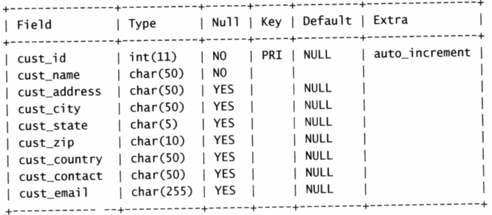

系统命令
- show databases
- show tables
- show columns from customers
 - show status
显示服务器状态信息 - show create database / show create table xxx
显示创表语句查询
- select xx from table order by column1 desc, column2;
按column1降序，column2升序，默认大小写是一样的 - select xx from table order by column limit 1
先排序column，再取第一个 - where xxx order by
提示：order by 必须放where之后，where默认不区分大小写 - where xxx is null
空值检查 - and or
操作符要打括号，and优先级更高 in not
1
2where xxx in (a,b,c) // 也可以嵌套select语句
where xxx not in (a,b,c)like
1
2select prob_name from products where prod_name like 's%e' // 其中%表示任意字符出现任意次
select xxx where xxx like '_ se' // 其中'_'匹配一个字符regexp (正则)
^$可以表示单词的开始和结尾，.表示单个字符1
select xxx where xxx regexp [binary] 'hello .000 | abcd [123][5-6]\\.'
其中binary可选参数，表示是否区分大小写
其中|表示或者，[]表示匹配里面的多个字符之一\\.表示匹配.
concat
1
select concat (var1, 'a', var2) from table; //拼接起来
as (别名)
- upper left length locate lower ltrim right substring
- CurDate CurTime
当前日期，当前时间 - Now
当前日期+时间 - avg, count, max, min, sum
求平均，求总数，最大值等 - group by
1
select count(*) from table group by xxx having count(*) > 2 order by xxx;
联结表、组合查询
- 默认笛卡尔积
检索出的行数为第一个表乘以第二个表的行数 - inner join table on xx = xx 类似默认笛卡尔积
- left outer join 和 right outer join
CROSS JOIN 笛卡尔乘积（所有可能的行对） INNER JOIN 仅对满足连接条件的CROSS中的列LEFT OUTER JOIN 一个表满足条件的行，和另一个表的所有行RIGHT OUTER JOIN 与LEFT相同，但两个表的角色互换FULL OUTER JOIN LEFT OUTER 和 RIGHT OUTER中所有行的超集
INNER JOIN 仅对满足连接条件的CROSS中的列LEFT OUTER JOIN 一个表满足条件的行，和另一个表的所有行RIGHT OUTER JOIN 与LEFT相同，但两个表的角色互换FULL OUTER JOIN LEFT OUTER 和 RIGHT OUTER中所有行的超集 - union / union all
其中union会去重数据插入、更新、删除
- 插入多条数据
1
insert into table(表字段) values(xxx),(xxx);
索引
普通索引
创建方式如下：1
2
3
4
5
6
7
8
9
10
11
12// 直接创建索引
CREATE INDEX index_name ON table(column(length))
// 修改表结构的方式添加索引
ALTER TABLE table_name ADD INDEX index_name ON (column(length))
// 创建表的时候同时创建索引
CREATE TABLE `table` (
`id` int(11) NOT NULL AUTO_INCREMENT ,
PRIMARY KEY (`id`),
INDEX index_name (title(length))
)
// 删除索引
DROP INDEX index_name ON table
唯一索引(和主键索引唯一的区别是可以为null)
1 | // 直接创建索引 |
这里length的意思取字段的前几个字符建立索引，这样的好处是能够灵活控制索引的磁盘空间
主键索引PK
一般为自增唯一字段，不允许为空